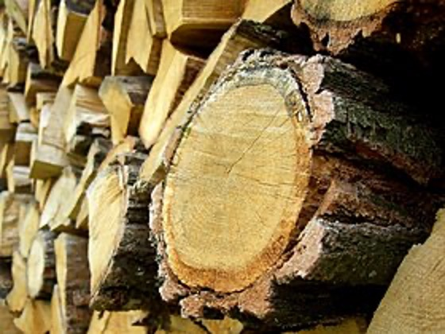
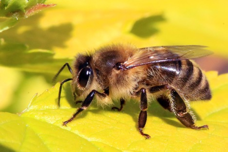
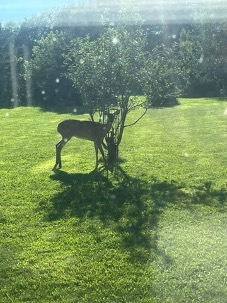
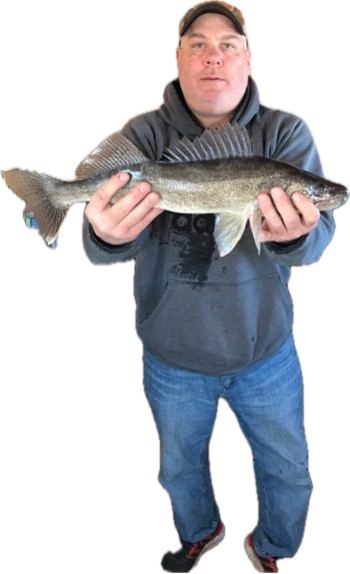

Woodworking
Jeff enjoys woodworking projects from big to small. Now that he has a dedicated woodworking space, he is excited to take his hobby to the next level!.

Beekeeping
This spring, Jeff is taking up beekeeping. He is excited to explore this new hobby and reap the rewards (honey!)

Gardening
Jeff loves gardening. Some of his favorite things to grow are squash, tomatoes, and onions. Hopefully the garden has a good year!

Ice Fishing
One of the hobbies Jeff is most excited about lately is ice fishing! Jeff likes to ice fish all over Northern Minnesota, especially at Red Lake!